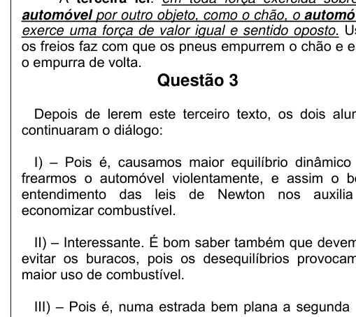

Texto 1 — A concepção do modelo PRIUS da Toyota é inovadora. Seu Motor Múltiplo Híbrido (Hybrid Synergy Drive) sintetiza o conhecimento da Física até o fim do século XIX: a Mecânica Clássica, a Termodinâmica e o Eletromagnetismo. O MCI é representado por 4 pistões envoltos por cilindros de 1500 cm³. Dois Motores Eletromagnéticos/Geradores (MEG-1 e MEG-2) funcionam como motores que consomem eletricidade ou como geradores. O conjunto consome uma média de 4,3 litros de gasolina a cada 100 km. Ao atingir a velocidade aproximada de 27 km/h entra em cena o MCI. O sistema de freio regenerativo aproveita energia cinética do veículo para recarregar as baterias. O consumo real varia entre 17,0 km/l e 42,5 km/l.
Questão 1 (obrigatório para alunos do 2º ano)
Depois de ler o texto acima dois alunos ficaram discutindo o que tinham entendido e travaram o seguinte diálogo:
I) – Entendi que o motor híbrido é uma composição de três motores. O movimento inicial é produzido pelo motor eletromagnético e o MCI tem também o papel de recarregar as baterias.
II) – Gostei do que li, principalmente o que dizem os engenheiros da Toyota, que este carro consome apenas um litro de gasolina a cada 42,5 km.
III) – Não é verdade. O valor correto, de acordo com os engenheiros da Toyota, é que o Prius faz, em média, 25 km com um litro de gasolina.
IV) – Em torno de 7,5 m/s entra em ação o MCI.
Podemos dizer das quatro afirmações acima que:
- A. As afirmações I e IV estão corretas.
- B. As afirmações I, II e IV estão corretas.
- C. Somente a afirmação III está correta.
- D. As afirmações I e II estão corretas.
- E. As afirmações I e III estão corretas.
Topic: Newtonian Mechanics, Thermodynamics Metodi: Physical Modeling, Kinematic Equations Competenze: Physical Reasoning Objects: Piston, Cylinder Fonte: Testo (PDF) — p.2
Testo 1 Il design del modello PRIUS di Toyota è innovativo. Il suo Motore Multiplo Ibrido (Hybrid Synergy Drive) sintetizza la conoscenza della fisica fino alla fine del XIX secolo: la Meccanica Classica, la Termodinamica e l’Elettromagnetismo. Il MCI è rappresentato da 4 pistoni avvolti da cilindri da 1500 cm3. Due Motori/Generatori elettromagnetici (MEG-1 e MEG-2) funzionano come motori che consumano elettricità o come generatori. L’insieme consuma in media 4,3 litri di benzina per 100 km. Al raggiungimento di una velocità di circa 27 km/h, il MCI entra in scena. Il sistema di frenata rigenerativa sfrutta l’energia cinetica del veicolo per ricaricare le batterie. La consumazione reale varia da 17,0 km/l a 42,5 km/l.
Questione 1 (obbligo per i secondari)
Dopo aver letto il testo sopra, due studenti hanno discusso di ciò che avevano capito e hanno avuto il seguente dialogo:
I) Ho capito che il motore ibrido è una composizione di tre motori. Il movimento iniziale viene prodotto dal motore elettromagnetico e il MCI ha anche il ruolo di ricaricare le batterie.
II) Mi è piaciuto quello che ho letto, soprattutto quello che dicono gli ingegneri di Toyota, che questa macchina consuma solo un litro di benzina ogni 42,5 km.
III) Non è vero. Il valore corretto, secondo gli ingegneri di Toyota, è che il Prius percorre in media 25 km con un litro di benzina.
IV) Attualmente 7,5 m/s entra in funzione l’ICM.
Possiamo dire dalle quattro affermazioni sopra che:
- A. Le affermazioni I e IV sono corrette.
- B. Le affermazioni I, II e IV sono corrette.
- C. Solo l’affermazione III è corretta.
- D. Le affermazioni I e II sono corrette.
- E. Le affermazioni I e III sono corrette.
Topic: Newtonian Mechanics, Thermodynamics Metodi: Physical Modeling, Kinematic Equations Competenze: Physical Reasoning Objects: Piston, Cylinder Fonte: Testo (PDF) — p.2
The design of the Toyota PRIUS is innovative. Its Hybrid Synergy Drive synthesizes the knowledge of physics until the late 19th century: Classical Mechanics, Thermodynamics and Electromagnetism. The MCI is represented by 4 pistons wrapped in 1500 cm3 cylinders. Two Electromagnetic Motors/Generators (MEG-1 and MEG-2) operate as electricity-consuming motors or as generators. The whole unit consumes an average of 4.3 litres of gasoline every 100 km. At a speed of approximately 27 km/h, the MCI enters the scene. The regenerative brake system uses the vehicle’s kinetic energy to recharge the batteries. The actual consumption varies between 17,0 km/l and 42,5 km/l.
Question 1 (compulsory for second year students)
After reading the above text, two students discussed what they had understood and had the following dialogue:
I) I understand that the hybrid engine is a three-engine composition. The initial motion is produced by the electromagnetic motor and the MCI also has the role of recharging the batteries.
II) I liked what I read, especially what Toyota engineers say, that this car only uses one liter of gasoline every 45 miles.
(iii) It is not true. The correct value, according to Toyota engineers, is that Prius does an average of 25 km with a liter of gasoline.
IV) At around 7.5 m/s the MCI is in operation.
We can say from the above four statements that:
- A. Statements I and IV are correct.
- B. Statements I, II and IV are correct.
- C. Only statement III is correct.
- D. Statements I and II are correct.
- E. Statements I and III are correct.
Topic: Newtonian Mechanics, Thermodynamics Metodi: Physical Modeling, Kinematic Equations Competenze: Physical Reasoning Objects: Piston, Cylinder Fonte: Testo (PDF) — p.2
Texto 2 — Estima-se que de cada 100 litros (l) (ou 100%) de gasolina colocados num automóvel, 62% são as perdas térmicas do MCI ao transformar a energia química em calor; 17% são perdidos nas paradas dos semáforos, congestionamentos etc. Assim, sobraram 21%. Desse valor, 2% são gastos com ar-condicionado, motor de limpador de pára-brisa, rádio etc; 6% com o atrito nos diferentes tipos de transmissão necessários para movimentação do automóvel. Vejam que de cada 100 litros adquiridos, apenas 13 são usados para girar os pneus do automóvel. Infelizmente, nem toda esta energia é usada, pois 4% são perdidos no atrito cinético dos pneus com o solo e 2% pela resistência do ar quando o automóvel se movimenta, sobrando somente 7% para a movimentação do automóvel.
Questão 2 (obrigatório para alunos do 2º ano)
Qual é a porcentagem aproximada de energia que chega às rodas do veículo e é usada para sua movimentação no asfalto?
- A. 13%
- B. 35%
- C. 54%
- D. 07%
- E. 40%
Topic: Thermodynamics, Conservation of Energy Metodi: Energy Conservation Method, Physical Modeling Competenze: Physical Reasoning, Estimation & Approximation Objects: — Fonte: Testo (PDF) — p.3
Testo 2 Si stima che per ogni 100 litri (l) (o 100%) di benzina inseriti in un’automobile, il 62% sono le perdite termiche dell’MCI nel trasformare l’energia chimica in calore; il 17% sono perdute nei semafori, nei congestioni, ecc. Così è rimasto il 21%. Il 2% di tale importo viene speso per l’aria condizionata, il motore di pulitore del parabrezza, la radio, ecc.; il 6% per lo scatto dei diversi tipi di trasmissione necessari per la movimentazione dell’automobile. Vedete che su ogni 100 litri acquistati, solo 13 vengono utilizzati per girare le gomme dell’auto. Purtroppo non tutta questa energia viene utilizzata, poiché il 4% viene perso per lo scatto cinetico delle gomme con il suolo e il 2% per la resistenza dell’aria quando l’auto si muove, lasciando solo il 7% per il movimento dell’auto.
Questione 2 (obbligo per i secondari)
Qual è l’approfondita percentuale di energia che arriva alle ruote del veicolo e che viene utilizzata per la sua mobilità sull’asfalto?
- A. 13%
- B. 35%
- C. 54%
- D. 07%
- E. 40%
Topic: Thermodynamics, Conservation of Energy Metodi: Energy Conservation Method, Physical Modeling Competenze: Physical Reasoning, Estimation & Approximation Objects: — Fonte: Testo (PDF) — p.3
Text 2 MSK1/> It is estimated that for every 100 litres (l) (or 100%) of petrol put into a car, 62% is the thermal losses of MCI by converting chemical energy into heat; 17% is lost in traffic lights, congestion, etc. So that’s 21 percent left. Of this amount, 2% is spent on air conditioning, windscreen cleaning engine, radio etc.; 6% on friction on the different types of transmission needed to drive the car. Note that of every 100 liters purchased, only 13 are used to turn the tires of the car. Unfortunately, not all of this energy is used, as 4% is lost in the kinetic friction of the tires with the ground and 2% by air resistance when the car is moving, leaving only 7% for the car’s movement.
Question 2 (compulsory for second year students)
What is the approximate percentage of energy that reaches the wheels of the vehicle and is used for its movement on the asphalt?
- A. 13%
- B. 35%
- C. 54%
- D. 07%
- E. 40%
Topic: Thermodynamics, Conservation of Energy Metodi: Energy Conservation Method, Physical Modeling Competenze: Physical Reasoning, Estimation & Approximation Objects: — Fonte: Testo (PDF) — p.3
Texto 3 — O valor de 17% das perdas pode ser reduzido pela boa dirigibilidade. O automóvel BMW 325i Touring tem cerca de 15.000 N de peso, distribuído próximo do ideal de 50% na frente e 50% na traseira. No caso do Prius, com 12.000 N, esta relação é de 60/40. O automóvel, ao ser freado, sofre uma transferência de peso da parte traseira para a dianteira. A primeira lei de Newton: um automóvel em repouso ou em Movimento Retilíneo Uniforme (MRU) se manterá dessa forma até que uma força externa atue sobre ele. A segunda lei: quando uma força é aplicada a um automóvel, a mudança no movimento é proporcional à força dividida pela massa do carro (). A terceira lei: em toda força exercida sobre o automóvel por outro objeto, o automóvel exerce uma força de valor igual e sentido oposto.
Questão 3
Depois de lerem este terceiro texto, os dois alunos continuaram o diálogo:
I) – Pois é, causamos maior equilíbrio dinâmico ao frearmos o automóvel violentamente, e assim o bom entendimento das leis de Newton nos auxilia a economizar combustível.
II) – Interessante. É bom saber também que devemos evitar os buracos, pois os desequilíbrios provocam o maior uso de combustível.
III) – Pois é, numa estrada bem plana a segunda Lei de Newton é o maior fator de economia de combustível.
IV) – E o peso do BMW 325i Touring é dividido em 6.000 N em cada eixo de seu automóvel, provocando maior economia de combustível.
Podemos dizer das afirmações acima que:
- A. Todas estão incorretas
- B. A II e a III estão corretas.
- C. Apenas a II está correta.
- D. Apenas a II e IV estão corretas.
- E. Todas estão corretas.
Topic: Newtonian Mechanics Metodi: Free-Body Diagram, Physical Modeling Competenze: Physical Reasoning, Diagrammatic Reasoning Objects: — Fonte: Testo (PDF) — p.4
Testo 3 Il 17% delle perdite può essere ridotto dalla buona navigabilità. La BMW 325i Touring pesa circa 15.000 N, distribuita vicino all’ideale del 50% davanti e del 50% dietro. Nel caso del Prius, con 12.000 N, questo rapporto è di 60/40. L’automobile, quando viene frenato, subisce un trasferimento di peso dalla parte posteriore verso l’anteriore. La prima legge di Newton: un’auto in riposo o in movimento reticolo uniforme (MRU) si manterrà così fino a quando una forza esterna agirà su di essa. La seconda legge: quando una forza viene applicata ad un’auto, il cambiamento di movimento è proporzionale alla forza divisa per la massa della macchina (). La terza legge: per ogni forza esercitata sull’automobile per un altro oggetto, l’automobile esercita una forza di pari valore e senso opposto.
La domanda 3
Dopo aver letto questo terzo testo, i due studenti hanno continuato il dialogo:
I) Sì, si crea un maggiore equilibrio dinamico frenando violentemente l’auto, e così una buona comprensione delle leggi di Newton ci aiuta a risparmiare combustibile.
II) Interessante. È bene sapere anche che dobbiamo evitare i buchi, perché gli squilibri provocano il maggiore consumo di combustibile.
III) Sì, in una strada molto piana la seconda legge di Newton è il fattore più importante di risparmio di carburante.
IV) E il peso della BMW 325i Touring è diviso in 6.000 N su ogni asse della sua auto, provocando maggiori risparmi di carburante.
Si può dire dalle affermazioni precedenti che:
- **A ** Tutti errati
- B. A II e III sono corrette.
- C. Solo II è corretto.
- D. Solo II e IV sono corretti.
- E’ tutto corretto.
Topic: Newtonian Mechanics Metodi: Free-Body Diagram, Physical Modeling Competenze: Physical Reasoning, Diagrammatic Reasoning Objects: — Fonte: Testo (PDF) — p.4
Text 3 The value of 17% of losses can be reduced by good airworthiness. The BMW 325i Touring car weighs about 15,000 N, distributed close to the ideal of 50% front and 50% rear. In the case of the Prius, with 12,000 N, this ratio is 60/40. The car, when braking, undergoes a weight transfer from the rear to the front. Newton’s first law: a car at rest or in uniform retinal motion (MRU) will remain that way until an external force acts on it. The second law: when a force is applied to an automobile, the change in motion is proportional to the force divided by the mass of the car (). The third law: for every force exerted on the automobile by another object, the automobile exerts an equal value force and opposite direction.
Question 3 - The Commission has decided to take the necessary measures to ensure that the Commission is able to take the necessary measures to ensure that the Commission is able to take the necessary measures to ensure that the Commission is able to take the necessary measures.
After reading this third text, the two students continued the dialogue:
I) Yes, we cause greater dynamic balance by braking the car violently, and so a good understanding of Newton’s laws helps us save fuel.
I. Interesting. It is also good to know that we must avoid holes, as imbalances lead to increased fuel use.
III) Yes, on a very flat road the second Newton’s Law is the biggest fuel economy factor.
IV) And the weight of the BMW 325i Touring is divided by 6,000 N on each axle of its car, resulting in greater fuel economy.
We can say from the above statements that:
- **A ** All of them are incorrect
- **B ** A and A are correct.
- MSK0/>C** Only the II is correct.
- D. Only II and IV are correct.
- MSK0/>E. MSK1/> All of them are correct.
Topic: Newtonian Mechanics Metodi: Free-Body Diagram, Physical Modeling Competenze: Physical Reasoning, Diagrammatic Reasoning Objects: — Fonte: Testo (PDF) — p.4
Questão 4
Depois de ver como ocorre o consumo de combustível num automóvel, façamos um exercício para recordar alguns conceitos. Em primeiro lugar, num contexto abstrato, esbocemos o seguinte gráfico da movimentação linear de um automóvel com trechos 1, 2 e 3, velocidades , , e tempos , , .
Em relação a este gráfico podemos dizer que:
I) De até o automóvel manteve velocidade zero e depois no intervalo o carro tem aceleração média de .
II) De até o automóvel desacelera de acordo com a aceleração média de .
III) No trecho 3 o carro faz Movimento Retilíneo Uniformemente Variado (MRUV), no trecho 1 MRU e, finalmente, no trecho 2 também MRUV.
Podemos dizer das três afirmações anteriores que:
- A. Todas estão certas.
- B. Apenas I e III estão corretas.
- C. Apenas a I está certa.
- D. Apenas III está correta.
- E. II e III estão corretas.

velocity-time graph for car motionTopic: Newtonian Mechanics Metodi: Kinematic Equations Competenze: Physical Reasoning, Diagrammatic Reasoning Objects: — Fonte: Testo (PDF) — p.4
Il numero di persone che hanno ricevuto la domanda è stato risolto.
Dopo aver visto come si consuma il carburante in un’auto, facciamo un esercizio per ricordare alcuni concetti. In primo luogo, in un contesto astratto, disegniamo il seguente grafico del movimento lineare di un’auto con tratti 1, 2 e 3, velocità , , e tempi , , .
Per quanto riguarda questo grafico possiamo dire che:
I) Da fino a la vettura ha mantenuto velocità zero e poi nell’intervallo la vettura ha una media di accelerazione .
II) Da a l’automobile si rallenta secondo l’accelerazione media di .
III) Nel tratto 3 la vettura fa Movimento Retilineo Uniformamente Variabile (MRUV), nel tratto 1 MRU e, infine, nel tratto 2 anche MRUV.
Possiamo dire dalle tre affermazioni precedenti che:
- MSK1 - Tutti corretti.
- B. Solo I e III sono corretti. Solo l’I è giusto.
- D. Solo III è corretto.
- **E ** II e III sono corretti.
velocity-time graph for car motion
Topic: Newtonian Mechanics Metodi: Kinematic Equations Competenze: Physical Reasoning, Diagrammatic Reasoning Objects: — Fonte: Testo (PDF) — p.4
Question 4 - The Commission has not yet decided on the application of this Regulation.
After looking at how fuel consumption in an automobile occurs, let’s do an exercise to recall some concepts. First, in an abstract context, we sketch the following graph of linear motion of a car with tracks 1, 2 and 3, speeds , , and times , , .
So we can say with this graph that:
I) From to the car maintained zero speed and then in the interval the car has an average acceleration of .
(ii) From to the car slows down according to the average acceleration of .
(iii) In section 3 the car makes a uniformly variable reticle movement (MRUV), in section 1 MRU and finally in section 2 also MRUV.
We can say from the three above statements that:
- They’re all right.
- B. Only I and III are correct.
- Only I is right.
- MSK1/>D Only III is correct.
- **E ** II and III are correct.
The following table shows the number of vehicles that have been registered in the Union:
Topic: Newtonian Mechanics Metodi: Kinematic Equations Competenze: Physical Reasoning, Diagrammatic Reasoning Objects: — Fonte: Testo (PDF) — p.4
Questão 5
Dentro da EPA (Environmental Protection Agency’s), uma agência americana de proteção do meio ambiente, existe um serviço que realiza testes padronizados de consumo de gasolina em diferentes automóveis (fueleconomy.gov/feg/fe_test_schedules.shtml).
Em um dos testes, foi feito um gráfico da velocidade × tempo para o trânsito urbano. Em relação a este gráfico podemos dizer que:
I) No intervalo de tempo aproximado entre 780 s e 960 s a velocidade média do automóvel em teste foi de aproximadamente 25 km/h.
II) No intervalo de tempo aproximado entre 180 s e 340 s a velocidade média do automóvel em teste foi exatamente de 80 km/h.
III) No intervalo de tempo aproximado entre 120 s e 180 s o automóvel em teste estava parado.
Em relação a estas afirmações podemos dizer que:
- A. Todas estão incorretas.
- B. Apenas I e III estão corretas.
- C. Apenas II esta correta.
- D. Todas estão corretas.
- E. Apenas III está correta.
Topic: Newtonian Mechanics Metodi: Kinematic Equations, Experimental Data Analysis Competenze: Experimental Data Analysis, Physical Reasoning Objects: — Fonte: Testo (PDF) — p.4
Il numero di persone che hanno ricevuto la domanda è stato di:
L’Agenzia per la protezione dell’ambiente (EPA), un’agenzia americana per la protezione dell’ambiente, ha un servizio che esegue test standardzzati sul consumo di benzina in diverse automobili (fueleconomy.gov/feg/fe_test_schedules.shtml).
In uno dei test, è stato fatto un grafico della velocità × tempo per il traffico urbano. Per quanto riguarda questo grafico possiamo dire che:
I) L’intervallo di tempo approssimativo tra 780 e 960 s ha rappresentato una velocità media di circa 25 km/h.
II) L’intervallo di tempo approssimativo tra 180 e 340 secondi ha consentito alla macchina in prova di raggiungere una velocità media di esattamente 80 km/h.
III) L’intervallo di tempo di circa 120-180 secondi è stato il momento in cui la vettura in prova è stata fermata.
In relazione a queste affermazioni possiamo dire che:
- **A ** Sono tutte errate.
- B. Solo I e III sono corretti.
- C. Solo II è corretto.
- D. Tutti corretti.
- E. Solo III è corretto.
Topic: Newtonian Mechanics Metodi: Kinematic Equations, Experimental Data Analysis Competenze: Experimental Data Analysis, Physical Reasoning Objects: — Fonte: Testo (PDF) — p.4
Question 5 - The Commission has not yet decided on the draft budget.
Within the EPA (Environmental Protection Agency), an American environmental protection agency, there is a service that performs standardized gasoline consumption tests on different cars (fueleconomy.gov/feg/fe_test_schedules.shtml).
In one of the tests, a graph of the speed × time for urban traffic was made. So we can say with this graph that:
(i) In the approximate time interval between 780 and 960 s, the average speed of the test vehicle was approximately 25 km/h.
(ii) In the approximate time interval between 180 and 340 s, the average speed of the test vehicle was exactly 80 km/h.
(iii) At the time interval of approximately 120 to 180 seconds the test vehicle was stopped.
In relation to these statements we can say that:
- MSK0/>A. All of them are incorrect.
- B. Only I and III are correct.
- Only II is correct.
- All of them are correct.
- E Only III is correct.
Topic: Newtonian Mechanics Metodi: Kinematic Equations, Experimental Data Analysis Competenze: Experimental Data Analysis, Physical Reasoning Objects: — Fonte: Testo (PDF) — p.4
Questão 6
O teste padronizado a seguir representa a movimentação de um automóvel numa estrada. Observe que o carro nunca parou. Em relação a este novo gráfico (velocidade × tempo para ciclo em estrada), qual das afirmações abaixo é a correta?
- A. A aceleração média até 44 s é de cerca de 10 m/s².
- B. No intervalo de 44 s e 704 s a menor velocidade foi de 20 m/s
- C. O espaço aproximado percorrido pelo automóvel foi de 100 km.
- D. A maior velocidade média ocorreu no intervalo de 393 s a 484 s.
- E. Durante o teste ocorreram 6 picos de velocidade.
Topic: Newtonian Mechanics Metodi: Kinematic Equations, Experimental Data Analysis Competenze: Experimental Data Analysis, Graph Linearization Objects: — Fonte: Testo (PDF) — p.5
Il numero di persone che hanno ricevuto la domanda è stato di circa un milione di persone.
Il seguente test standard rappresenta il movimento di un’auto su una strada. Si noti che la macchina non si è mai fermata. In relazione a questo nuovo grafico (velocità × tempo per ciclo su strada), quale delle affermazioni di seguito è corretta?
- A. L’accelerazione media fino a 44 s è di circa 10 m/s2.
- B. L’intervallo di 44 s e 704 s ha portato alla velocità minima di 20 m/s
- C. L’approximato spazio percorso dalla macchina è stato di 100 km. La velocità media più alta si è verificata nell’intervallo da 393 s a 484 s.
- E. Durante la prova si sono verificati 6 picchi di velocità.
Topic: Newtonian Mechanics Metodi: Kinematic Equations, Experimental Data Analysis Competenze: Experimental Data Analysis, Graph Linearization Objects: — Fonte: Testo (PDF) — p.5
Question 6 - The Commission has not yet adopted a proposal for a regulation on the application of the rules on the protection of workers’ rights.
The following standardised test represents the movement of a car on a road. Notice the car never stopped. In relation to this new chart (speed × time per road cycle), which of the statements below is correct?
- A. The average acceleration up to 44 s is about 10 m/s2.
- B. At 44 s and 704 s the lowest speed was 20 m/ s The approximate distance travelled by the car was 100 km. The highest mean speed occurred in the 393 to 484 s range.
- **E ** During the test there were 6 speed spikes.
Topic: Newtonian Mechanics Metodi: Kinematic Equations, Experimental Data Analysis Competenze: Experimental Data Analysis, Graph Linearization Objects: — Fonte: Testo (PDF) — p.5
Questão 7
Se um veículo na estrada está sendo acelerado, qual é a força que atua neste veículo para produzir esta aceleração?
- A. A força dos motores nas rodas.
- B. A força do atrito estático dos pneus no asfalto.
- C. A força do atrito estático do asfalto sobre os pneus.
- D. A força de atrito cinético dos pneus no asfalto.
- E. A força normal da estrada sobre o automóvel.
Topic: Newtonian Mechanics Metodi: Free-Body Diagram Competenze: Physical Reasoning Objects: — Fonte: Testo (PDF) — p.5
Il numero di persone che hanno ricevuto il messaggio è stato di circa un milione di persone.
Se un veicolo sulla strada è in fase di accelerazione, quale forza agisce su questo veicolo per produrre tale accelerazione?
- A La forza dei motori sulle ruote.
- B. La forza di attrito statico delle gomme sull’asfalto.
- C. La forza di attrito statico dell’asfalto sulle gomme.
- D. La forza di attrito cinetica delle gomme sull’asfalto.
- E. La normale forza stradale sull’automobile.
Topic: Newtonian Mechanics Metodi: Free-Body Diagram Competenze: Physical Reasoning Objects: — Fonte: Testo (PDF) — p.5
Question 7 - The Commission has not yet decided on the application of this Regulation.
If a vehicle on the road is accelerating, what force is acting on that vehicle to produce this acceleration?
- The strength of the engines on the wheels.
- B. The force of static friction of the tyres on the asphalt.
- C. The force of static friction of the asphalt on the tyres.
- D. The kinetic friction force of the tyres on the asphalt.
- **E ** The normal road force on the car.
Topic: Newtonian Mechanics Metodi: Free-Body Diagram Competenze: Physical Reasoning Objects: — Fonte: Testo (PDF) — p.5
Texto 4 — A segunda lei de Newton, aplicada às principais forças que atuam sobre o automóvel é expressa, para o caso unidimensional, como:
A força de resistência do ar tem o fator nas constantes simplificadas, e é proporcional a (onde é a área virtual frontal e a velocidade).
Questão 8
Considere, por simplicidade, que o Prius tem uma área virtual de 3 m². Suponha que aumentemos a sua velocidade de 20 m/s para 40 m/s. Neste contexto, a força de resistência do ar será aumentada em:
- A. 100%
- B. 200%
- C. 300%
- D. 400%
- E. 500%
Topic: Newtonian Mechanics, Fluid Mechanics Metodi: Free-Body Diagram, Physical Modeling Competenze: Physical Reasoning, Mathematical Modeling Objects: — Fonte: Testo (PDF) — p.5
Testo 4 La seconda legge di Newton, applicata alle principali forze che agiscono sull’automobile, è espressa, per il caso unidimensionario, come:
La resistenza all’aria ha il fattore nelle costanti semplificate, e è proporzionale a (dove è l’area virtuale frontale e la velocità).
Questão 8
Considere, por simplicidade, que o Prius tem uma área virtual de 3 m². Supponiamo di aumentare la sua velocità da 20 m/s a 40 m/s. In questo contesto, la forza di resistenza all’aria sarà aumentata a:
- A. 100%
- B. 200%
- C. 300%
- D. 400%
- E. 500%
Topic: Newtonian Mechanics, Fluid Mechanics Metodi: Free-Body Diagram, Physical Modeling Competenze: Physical Reasoning, Mathematical Modeling Objects: — Fonte: Testo (PDF) — p.5
Text 4 Newton’s second law, applied to the principal forces acting on the automobile, is expressed, for the one-dimensional case, as follows:
The air resistance force has the factor in the simplified constants, and is proportional to (where is the frontal virtual area and the speed).
Questão 8
Considere, por simplicidade, que o Prius tem uma área virtual de 3 m². Suppose we increase its speed from 20 m/s to 40 m/s. In this context, the air resistance force shall be increased by:
- A. 100%
- B. 200%
- C. 300%
- D. 400%
- E. 500%
Topic: Newtonian Mechanics, Fluid Mechanics Metodi: Free-Body Diagram, Physical Modeling Competenze: Physical Reasoning, Mathematical Modeling Objects: — Fonte: Testo (PDF) — p.5
Questão 9
Na figura abaixo, os dois veículos estão em MRU com a mesma velocidade e o automóvel conversível “aproveita” o vácuo do caminhão para economizar combustível. O passageiro do conversível arremessa uma bolinha para cima com velocidade inicial de 10 m/s. Depois de quanto tempo a bola deve retornar à mão deste passageiro? Se a distância horizontal percorrida pela bola for de 40 m, qual é a velocidade do caminhão?
- A. 1,0 s e 18 km/h
- B. 0,5 s e 36 km/h
- C. 1,5 s e 18 km/h
- D. 2,0 s e 72 km/h
- E. 1,0 s e 36 km/h
Topic: Newtonian Mechanics Metodi: Kinematic Equations, Vector Decomposition Competenze: Physical Reasoning, Mathematical Modeling Objects: Ball Fonte: Testo (PDF) — p.6
Il numero di persone che hanno ricevuto la domanda è stato di:
Nella figura seguente, i due veicoli sono in MRU con la stessa velocità e l’auto convertibile “aprove” il vuoto del camion per risparmiare carburante. Il passeggero del convertitore lancia una pallina in alto con una velocità iniziale di 10 m/s. Dopo quanto tempo la palla deve tornare nella mano di questo passeggero? Se la distanza orizzontale percorsa dalla palla è di 40 metri, qual è la velocità del camion?
- A. 1,0 s e 18 km/h
- B. 0,5 s e 36 km/h
- C. 1,5 s e 18 km/h
- D. 2,0 s e 72 km/h
- E. 1,0 s e 36 km/h
Topic: Newtonian Mechanics Metodi: Kinematic Equations, Vector Decomposition Competenze: Physical Reasoning, Mathematical Modeling Objects: Ball Fonte: Testo (PDF) — p.6
Question 9 - The Commission has decided to take a decision on the draft budget.
In the figure below, both vehicles are in MRU at the same speed and the convertible car “takes advantage” of the truck’s vacuum to save fuel. The passenger of the convertible throws a ball upwards at an initial speed of 10 m/s. How long after that ball is to return to this passenger’s hand? If the horizontal distance the ball travels is 40 meters, what is the speed of the truck?
- A. 1,0 s e 18 km/h
- B. 0,5 s e 36 km/h
- C. 1,5 s e 18 km/h
- D. 2,0 s e 72 km/h
- E. 1,0 s e 36 km/h
Topic: Newtonian Mechanics Metodi: Kinematic Equations, Vector Decomposition Competenze: Physical Reasoning, Mathematical Modeling Objects: Ball Fonte: Testo (PDF) — p.6
Questão 10
Considerando o coeficiente de atrito cinético () entre o asfalto e o pneu igual a 0,02 e a massa do automóvel BMW (texto 3) igual a 1.500 kg, qual será o módulo do trabalho feito pela força de atrito cinético na distância percorrida da questão anterior?
- A. 11,0 kJ
- B. 13,0 kJ
- C. 10,0 kJ
- D. 8,0 kJ
- E. 12,0 kJ
Topic: Newtonian Mechanics, Conservation of Energy Metodi: Energy Conservation Method, Free-Body Diagram Competenze: Mathematical Modeling Objects: — Fonte: Testo (PDF) — p.6
Il numero di persone che hanno ricevuto la domanda è stato risolto.
Considerando che il coefficiente di attrito cinetico () tra asfalto e pneumatico è di 0,02 e la massa della BMW (testo 3) di 1.500 kg, quale sarà il modulo di lavoro effettuato dalla forza di attrito cinetica nella distanza percorsa nella questione precedente?
- A. 11,0 kJ
- B. 13,0 kJ
- C. 10,0 kJ
- D. 8,0 kJ
- E. 12,0 kJ
Topic: Newtonian Mechanics, Conservation of Energy Metodi: Energy Conservation Method, Free-Body Diagram Competenze: Mathematical Modeling Objects: — Fonte: Testo (PDF) — p.6
The Commission has also adopted a number of measures to combat the use of the ‘small’ technology.
Given the kinetic friction coefficient () between the asphalt and the tyre equal to 0,02 and the mass of the BMW car (Text 3) equal to 1,500 kg, what will be the work module of the kinetic friction force at the distance travelled in the previous question?
- A. 11,0 kJ
- B. 13,0 kJ
- C. 10,0 kJ
- D. 8,0 kJ
- E. 12,0 kJ
Topic: Newtonian Mechanics, Conservation of Energy Metodi: Energy Conservation Method, Free-Body Diagram Competenze: Mathematical Modeling Objects: — Fonte: Testo (PDF) — p.6
Questão 11
Suponha que o automóvel Prius estava a 20 m/s e viu a lombada eletrônica que limita a velocidade a, no máximo, 40 km/h. Você usou, então, o freio regenerativo e foi detectada a velocidade de 36 km/h. Sabendo que 54% da energia total foi desperdiçada, quanta energia foi acumulada na bateria?
- A. 82,8 J
- B. 79,2 kJ
- C. 72,9 J
- D. 82,8 kJ
- E. 79,2 J
Topic: Conservation of Energy, Newtonian Mechanics Metodi: Energy Conservation Method, Kinematic Equations Competenze: Mathematical Modeling Objects: Battery Fonte: Testo (PDF) — p.6
Il numero di persone che hanno ricevuto il diploma è stato di circa un milione di persone.
Supponiamo che la Prius fosse a 20 m/s e che avesse visto la lombalgia elettronica che limita la velocità a 40 km/h al massimo. Quindi hai usato il freno rigenerativo e hai rilevato la velocità di 36 km/h. Sapendo che il 54% dell’energia totale è stata sprecata, quanta energia è stata accumulata nella batteria?
- A. 82,8 J
- B. 79,2 kJ
- C. 72,9 J
- D. 82,8 kJ
- E. 79,2 J
Topic: Conservation of Energy, Newtonian Mechanics Metodi: Energy Conservation Method, Kinematic Equations Competenze: Mathematical Modeling Objects: Battery Fonte: Testo (PDF) — p.6
The Commission has already adopted a number of proposals for the amendment.
Suppose the Prius was at 20 m/s and saw the electronic backrest limiting speed to a maximum of 40 km/h. You then used the regenerative brake and were detected at a speed of 36 km/h. Knowing that 54 percent of the total energy was wasted, how much energy was stored in the battery?
- A. 82,8 J
- B. 79,2 kJ
- C. 72,9 J
- D. 82,8 kJ
- E. 79,2 J
Topic: Conservation of Energy, Newtonian Mechanics Metodi: Energy Conservation Method, Kinematic Equations Competenze: Mathematical Modeling Objects: Battery Fonte: Testo (PDF) — p.6
Questão 12
É fixado um pêndulo no teto de um automóvel. Este pêndulo pode ser chamado de acelerômetro. Considere as três situações possíveis para o acelerômetro, com o carro vindo da sua direita para a esquerda:
I) Em 1 o carro está perdendo velocidade, em 3 ganhando velocidade e em 2 está em MRU.
II) Em 1 está sendo acelerado, em 3 desacelerando e em 2 está em MRU.
III) Em 1 está ganhando velocidade, em 2 está em MRU e em 3 está desacelerando.
- A. Todas estão erradas.
- B. Apenas a II está correta.
- C. II e III estão corretas.
- D. Apenas I está correta.
- E. Todas estão corretas.
Topic: Newtonian Mechanics Metodi: Free-Body Diagram, Physical Modeling Competenze: Physical Reasoning, Diagrammatic Reasoning Objects: Pendulum Fonte: Testo (PDF) — p.6
Il numero di persone che hanno ricevuto il messaggio è stato di circa un milione di persone.
Un pendolo è fissato sul tetto di un’auto. Questo pendolo può essere chiamato accelerometro. Considerate le tre possibili situazioni per l’accelerometro, con la macchina che viene da destra a sinistra:
I) In 1 la macchina sta perdendo velocità, in 3 sta guadagnando velocità e in 2 sta in MRU.
II) In 1 si sta accelerando, in 3 si sta rallentando e in 2 si sta in MRU.
III) In 1 sta aumentando di velocità, in 2 sta aumentando di velocità e in 3 sta rallentando.
- MSK1 - Tutti sbagliati.
- B. Solo II è corretto.
- C. II e III sono corretti.
- D. Solo I è corretto.
- E’ tutto corretto.
Topic: Newtonian Mechanics Metodi: Free-Body Diagram, Physical Modeling Competenze: Physical Reasoning, Diagrammatic Reasoning Objects: Pendulum Fonte: Testo (PDF) — p.6
Question 12 - The Commission has not yet decided on the draft budget.
A pendulum is attached to the roof of an automobile. This pendulum can be called an accelerometer. Consider the three possible situations for the accelerometer, with the car coming from its right to its left:
I) In 1 the car is losing speed, in 3 it gains speed and in 2 it is in MRU.
(ii) In 1 it is accelerating, in 3 it is slowing down and in 2 it is in MRU.
III) In 1 it’s gaining speed, in 2 it’s in MRU and in 3 it’s slowing down.
- They’re all wrong.
- B Only the II is correct.
- **C ** II and III are correct.
- D Only I is correct.
- MSK0/>E. MSK1/> All of them are correct.
Topic: Newtonian Mechanics Metodi: Free-Body Diagram, Physical Modeling Competenze: Physical Reasoning, Diagrammatic Reasoning Objects: Pendulum Fonte: Testo (PDF) — p.6
Questão 13
Já que falamos em acelerômetro, reflita sobre estas afirmações:
I) Quando pisamos no freio do automóvel, variamos a velocidade. Então, o freio é um acelerador.
II) Ao girarmos o volante do automóvel e fazermos uma curva, estamos usando acelerador, o qual muda a direção da velocidade vetorial do automóvel.
III) Numa estrada plana, ao aumentarmos a velocidade, obviamente estamos usando acelerador.
- A. Apenas I está errada.
- B. I e II estão erradas.
- C. Apenas III está certa.
- D. Todas estão corretas.
- E. I e III estão corretas.
Topic: Newtonian Mechanics Metodi: Kinematic Equations, Physical Modeling Competenze: Physical Reasoning Objects: — Fonte: Testo (PDF) — p.6
Il numero di persone che hanno ricevuto il servizio è stato di circa un milione di persone.
Poiché parliamo di accelerometro, rifletti su queste affermazioni:
I) Quando si calza il freno dell’auto, si varia la velocità. Quindi il freno è un acceleratore.
II) Quando ruotiamo il volante dell’auto e facciamo una curva, usiamo un acceleratore che cambia la direzione della velocità vetorale dell’auto.
III) Su una strada piana, aumentando la velocità, ovviamente stiamo usando un acceleratore.
- MSK1/ A solo I è sbagliato.
- **B ** I e II sono sbagliati. Solo III è giusto.
- D. Tutti corretti.
- **E ** I e III sono corretti.
Topic: Newtonian Mechanics Metodi: Kinematic Equations, Physical Modeling Competenze: Physical Reasoning Objects: — Fonte: Testo (PDF) — p.6
Question 13 - The Commission has decided to take the necessary measures to ensure that the Commission is able to take the necessary measures to ensure that the Commission is able to take the necessary measures to ensure that the Commission is able to take the necessary measures.
Since we’re talking about accelerometer, think about these statements:
I) When we step on the brake of the car, we vary the speed. So the brake is an accelerator.
II) When you turn the steering wheel of the car and turn it around, you’re using an accelerator, which changes the direction of the car’s vector velocity.
III) On a flat road, as we increase speed, we’re obviously using an accelerator.
- MSK1/>A. Only I is wrong.
- MSK0/>B ** I and II are wrong.
- Only III is right.
- All of them are correct.
- MSK1 and III are correct.
Topic: Newtonian Mechanics Metodi: Kinematic Equations, Physical Modeling Competenze: Physical Reasoning Objects: — Fonte: Testo (PDF) — p.6
Questão 14
Um automóvel está subindo com velocidade constante uma ladeira íngreme de inclinação , usando o MCI e o MEG. Desprezando as forças dissipativas, qual é o valor da força do motor do automóvel nas rodas devido à inclinação da ladeira?
- A.
- B.
- C.
- D.
- E.
Topic: Newtonian Mechanics Metodi: Free-Body Diagram, Vector Decomposition Competenze: Physical Reasoning, Mathematical Modeling Objects: Inclined Plane Fonte: Testo (PDF) — p.7
Il numero di persone che hanno ricevuto il diploma è stato di circa un milione di persone.
Un’auto sta saliendo a velocità costante su un inclinato inclinato , usando MCI e MEG. Scommettiamo le forze dissipative, qual è il valore della forza del motore dell’automobile sulle ruote a causa dell’inclinazione del versante?
- A.
- B.
- C.
- D.
- E.
Topic: Newtonian Mechanics Metodi: Free-Body Diagram, Vector Decomposition Competenze: Physical Reasoning, Mathematical Modeling Objects: Inclined Plane Fonte: Testo (PDF) — p.7
Questão 14
Um automóvel está subindo com velocidade constante uma ladeira íngreme de inclinação , usando o MCI e o MEG. Disregarding dissipative forces, what is the value of the motor force of the car on the wheels due to slope slope?
- A.
- B.
- C.
- D.
- E.
Topic: Newtonian Mechanics Metodi: Free-Body Diagram, Vector Decomposition Competenze: Physical Reasoning, Mathematical Modeling Objects: Inclined Plane Fonte: Testo (PDF) — p.7
Questão 15
Após a subida referida na questão anterior, o motorista dirige com velocidade 15 m/s e a altura é igual a 5 m. Usando o freio regenerativo e os dados apresentados nas questões anteriores, quanta energia será adicionada na bateria se o automóvel chegar à parte de baixo com a mesma velocidade? Lembre-se que apenas uma parte da energia (veja questão 11) será usada para recarregar a bateria, pois houve perda de energia.
- A. 27,6 kJ
- B. 32,4 J
- C. 32,4 kJ
- D. 34,4 kJ
- E. 27,6 J
Topic: Conservation of Energy, Newtonian Mechanics Metodi: Energy Conservation Method, Conservation Laws Competenze: Mathematical Modeling Objects: — Fonte: Testo (PDF) — p.7
Il numero di persone che hanno ricevuto la domanda è stato di circa un milione di persone.
Dopo l’ascesa di cui alla domanda precedente, il conducente deve guidare a 15 m/s e l’altezza è pari a 5 m. Usando il freno di rigenerazione e i dati presentati nelle domande precedenti, quanta energia sarà aggiunta alla batteria se l’auto arriva in basso alla stessa velocità? Ricorda che solo una parte dell’energia (vedi domanda 11) sarà utilizzata per ricaricare la batteria, poiché è stata persa energia.
- A. 27,6 kJ
- B. 32,4 J
- C. 32,4 kJ
- D. 34,4 kJ
- E. 27,6 J
Topic: Conservation of Energy, Newtonian Mechanics Metodi: Energy Conservation Method, Conservation Laws Competenze: Mathematical Modeling Objects: — Fonte: Testo (PDF) — p.7
Question 15 - The Commission has decided to take the necessary measures to ensure that the Commission is able to take the necessary measures to ensure that the Commission is able to take the necessary measures to ensure that the Commission is able to take the necessary measures.
After the climb referred to in the previous question, the driver shall drive at a speed of 15 m/s and the height shall be equal to 5 m. Using the regenerative brake and the data presented in the previous questions, how much energy will be added to the battery if the car reaches the bottom at the same speed? Please remember that only a part of the energy (see question 11) will be used to recharge the battery, as there has been a loss of energy.
- A. 27,6 kJ
- B. 32,4 J
- C. 32,4 kJ
- D. 34,4 kJ
- E. 27,6 J
Topic: Conservation of Energy, Newtonian Mechanics Metodi: Energy Conservation Method, Conservation Laws Competenze: Mathematical Modeling Objects: — Fonte: Testo (PDF) — p.7
Questão 16 (obrigatório para alunos do 2º ano)
Aproximando-se a energia química contida em um litro de gasolina para J e considerando que um automóvel típico de 1000 cm³ (Uno Mille, por exemplo) faz cerca de 15 km/l na estrada, sabendo-se, ainda, que apenas 13% da energia gerada no MCI vão para os pneus, pergunta-se: qual o valor da força média feita pelos pneus no asfalto para manter o automóvel a velocidade constante durante os 15 km?
- A. 240 N
- B. 450 N
- C. 585 N
- D. 260 N
- E. 390 N
Topic: Newtonian Mechanics, Conservation of Energy Metodi: Energy Conservation Method, Kinematic Equations Competenze: Mathematical Modeling, Unit Conversion Objects: — Fonte: Testo (PDF) — p.7
Questione 16 (obbligo per i secondari)
Approfondendo l’energia chimica contenuta in un litro di benzina per J e considerando che una tipica auto di 1000 cm3 (un Mille, per esempio) fa circa 15 km/l sulla strada, sapendo anche che solo il 13% dell’energia generata nel MCI va ai pneumatici, si chiede: qual è il valore medio della forza prodotta dai pneumatici sull’asfalto per mantenere l’auto alla velocità costante per 15 km?
- A. 240 N
- B. 450 N
- C. 585 N
- D. 260 N
- E. 390 N
Topic: Newtonian Mechanics, Conservation of Energy Metodi: Energy Conservation Method, Kinematic Equations Competenze: Mathematical Modeling, Unit Conversion Objects: — Fonte: Testo (PDF) — p.7
Question 16 (compulsory for second year students)
Approaching the chemical energy contained in a liter of gasoline to J and considering that a typical 1000 cm3 car (e.g. One Mille) does about 15 km/l on the road, while it is also known that only 13% of the energy generated in the MCI goes to the tyres, the question arises: what is the average force made by the tyres on the asphalt to keep the car at a constant speed for 15 km?
- A. 240 N
- B. 450 N
- C. 585 N
- D. 260 N
- E. 390 N
Topic: Newtonian Mechanics, Conservation of Energy Metodi: Energy Conservation Method, Kinematic Equations Competenze: Mathematical Modeling, Unit Conversion Objects: — Fonte: Testo (PDF) — p.7
Questão 17
Aprendemos que muita energia é desperdiçada nas paradas do automóvel e no tráfego lento das cidades (outras perdas — 17%). Por essa razão, os motoristas procuram parar o mínimo possível. Em algumas cidades é possível encontrar semáforos sincronizados. Observando que as linhas começam a se apagar, e que o tempo de cada “linha” do semáforo é 1 s, num total de 10 linhas. Considere que você está parado a uma distância de 100 m do semáforo. Qual das acelerações abaixo faz com que se cruze o primeiro sinal confortavelmente? Considere nulos os efeitos dissipativos e o sinal amarelo inexistente.
- A. 1,5 m/s²
- B. 0,5 m/s²
- C. 1,0 m/s²
- D. 2,0 m/s²
- E. 3,0 m/s²
Topic: Newtonian Mechanics Metodi: Kinematic Equations Competenze: Mathematical Modeling Objects: — Fonte: Testo (PDF) — p.7
Il numero di persone che hanno ricevuto il messaggio è stato di circa un milione di persone.
Abbiamo scoperto che molta energia viene sprecata nei parcheggi e nei traffico lento delle città (altre perdite 17%). Per questo motivo, i conducenti cercano di fermarsi il meno possibile. In alcune città è possibile trovare semafori sincronizzati. Notando che le linee iniziano a spegnersi, e che il tempo di ogni “line” del semaforo è di 1 secondo, in un totale di 10 linee. Considera che ti trovi a 100 metri dal semaforo. Quale delle accelerazioni di sotto permette di attraversare confortabilmente il primo segnale? Considera nullissimi gli effetti dissipatori e il segnale giallo non esistente.
- A. 1,5 m/s²
- B. 0,5 m/s²
- C. 1,0 m/s²
- D. 2,0 m/s²
- E. 3,0 m/s²
Topic: Newtonian Mechanics Metodi: Kinematic Equations Competenze: Mathematical Modeling Objects: — Fonte: Testo (PDF) — p.7
Question 17 - The Commission has not yet decided on the application of the rules of procedure.
We learned that a lot of energy is wasted at car stops and in slow city traffic (other losses 17%). For this reason, drivers try to stop as little as possible. In some cities you can find synchronized traffic lights. Notice that the lines start to fade, and that the time of each “line” of the traffic light is 1 second, a total of 10 lines. Consider that you are standing 100 meters from the traffic light. Which of the accelerations below makes the first signal cross comfortably? Consider null the dissipative effects and the nonexistent yellow sign.
- A. 1,5 m/s²
- B. 0,5 m/s²
- C. 1,0 m/s²
- D. 2,0 m/s²
- E. 3,0 m/s²
Topic: Newtonian Mechanics Metodi: Kinematic Equations Competenze: Mathematical Modeling Objects: — Fonte: Testo (PDF) — p.7
Questão 18
Interpretem, por favor, estas duas fotos. A primeira mostra um automóvel em velocidade alta fazendo uma curva para a direita em que houve muita transferência de peso para a dianteira do automóvel (90% é o valor estimado pelos especialistas). No detalhe desta foto observa-se que o pneu traseiro direito toca pouco no asfalto.
A segunda foto parece que o motorista experiente sentiu que, devido à alta velocidade com que vinha, não tinha tração na roda para fazer a curva. Preferiu frear e depois ir embora.
Considerando este diálogo entre os dois alunos e o que entendeu do texto 3, avalie as seguintes afirmações:
I) Na primeira foto, o motorista fez a curva com uma velocidade muito alta, assim a ação conjunta da inércia do veículo e da altura do CG faz com que a traseira do veículo levantasse, inclusive com perigo de capotamento.
II) Na segunda foto, o motorista vinha com velocidade muito alta e como não poderia fazer a curva, para evitar o capotamento, preferiu frear, deixando apenas as marcas do pneu no asfalto.
III) Para se fazer curvas em estradas, gira-se o volante do automóvel de forma que a interação da força de atrito entre pneu e o asfalto mude o automóvel para uma nova direção.
Em relação a estas afirmações podemos dizer que:
- A. Apenas a afirmação III está correta.
- B. As afirmações I e II estão corretas.
- C. As afirmações I e III estão corretas.
- D. Todas as afirmativas estão corretas.
- E. Apenas a afirmação II está sempre correta.
Topic: Newtonian Mechanics, Rotational Dynamics Metodi: Free-Body Diagram, Physical Modeling Competenze: Physical Reasoning, Diagrammatic Reasoning Objects: — Fonte: Testo (PDF) — p.8
Il numero di persone che hanno ricevuto la domanda è stato di circa un milione di persone.
Interpretate, per favore, queste due foto. La prima mostra un’auto ad alta velocità che fa una curva a destra in cui c’è stato un grande trasferimento di peso verso la parte anteriore dell’auto (90% è il valore stimato dagli esperti). Nel dettaglio di questa foto si osserva che la gomma posteriore destra tocca poco l’asfalto.
La seconda foto sembra che l’autista esperto sentisse che, a causa della sua grande velocità, non aveva trazione sulla ruota per fare la curva. Preferì frenare e poi andar via.
Considerando il dialogo tra i due studenti e il suo punto di vista sul testo 3, valuta le seguenti affermazioni:
I) Nella prima foto, il conducente ha fatto la curva a una velocità molto alta, quindi l’azione congiunta dell’inerzia del veicolo e dell’altezza del CG fa sì che la parte posteriore del veicolo si alzi, anche con pericolo di incrocio.
II) Nella seconda foto, il conducente veniva a velocità molto alta e non potendo fare la curva, per evitare il rimbalzo, preferì frenare, lasciando solo le impronte della gomma sull’asfalto.
III) Per curvare le strade, si gira il volante dell’automobile in modo che l’interazione della forza di attrito tra la gomma e l’asfalto faccia cambiare direzione l’automobile.
In relazione a queste affermazioni possiamo dire che:
- A. Solo l’affermazione III è corretta.
- B. Le affermazioni I e II sono corrette.
- C. Le affermazioni I e III sono corrette.
- **D ** Tutte le affermazioni sono corrette.
- E. Solo l’affermazione II è sempre corretta.
Topic: Newtonian Mechanics, Rotational Dynamics Metodi: Free-Body Diagram, Physical Modeling Competenze: Physical Reasoning, Diagrammatic Reasoning Objects: — Fonte: Testo (PDF) — p.8
Question 18 - The Commission has not yet decided on the application of the rules of procedure.
Interpret these two pictures, please. The first shows a high-speed car making a right-hand turn where there was a lot of weight transfer to the front of the car (90% is the estimated value by experts). In the detail of this photo, it is noted that the right rear tyre touches little on the asphalt.
The second photo seems to indicate that the experienced driver felt that, due to the high speed at which he was driving, he had no wheel traction to make the turn. He preferred to brake and then leave.
Considering this dialogue between the two students and what you have understood from text 3, assess the following statements:
(i) In the first photo, the driver made the curve at a very high speed, so the joint action of the vehicle inertia and the height of the CG causes the rear of the vehicle to lift, even with the danger of overturning.
II) In the second photo, the driver was coming at a very high speed and as he could not make the corner, to avoid the overturning, he preferred to brake, leaving only the tyre marks on the asphalt.
(iii) To make curves on roads, the steering wheel of the car is turned so that the friction force between the tyre and the asphalt moves the car in a new direction.
In relation to these statements we can say that:
- A. Only statement III is correct.
- B. Statements I and II are correct.
- C. Statements I and III are correct.
- **D ** All the affirmations are correct.
- E. Only statement II is always correct.
Topic: Newtonian Mechanics, Rotational Dynamics Metodi: Free-Body Diagram, Physical Modeling Competenze: Physical Reasoning, Diagrammatic Reasoning Objects: — Fonte: Testo (PDF) — p.8
Questão 19
Um dos aspectos de direção de curvas que gostaríamos de chamar atenção é que, para evitar desequilíbrios ao entrar na curva com muita velocidade, constroem-se curvas inclinadas (peralte). Digam qual é a expressão da força centrípeta devido à inclinação da curva?
- A.
- B.
- C.
- D.
- E.
Topic: Newtonian Mechanics Metodi: Free-Body Diagram, Vector Decomposition Competenze: Mathematical Modeling, Physical Reasoning Objects: Inclined Plane Fonte: Testo (PDF) — p.8
Questão 19
Uno degli aspetti della direzione delle curve che vorremmo richiamare l’attenzione è che, per evitare squilibri quando si entra in curva a grande velocità, si costruiscono curve inclinate (peralte). Digam qual é a expressão da força centrípeta devido à inclinação da curva?
- A.
- B.
- C.
- D.
- E.
Topic: Newtonian Mechanics Metodi: Free-Body Diagram, Vector Decomposition Competenze: Mathematical Modeling, Physical Reasoning Objects: Inclined Plane Fonte: Testo (PDF) — p.8
Questão 19
One of the aspects of curve direction that we would like to draw attention to is that to avoid imbalances when entering the curve at too high speed, slanted curves (beams) are constructed. Digam qual é a expressão da força centrípeta devido à inclinação da curva?
- A.
- B.
- C.
- D.
- E.
Topic: Newtonian Mechanics Metodi: Free-Body Diagram, Vector Decomposition Competenze: Mathematical Modeling, Physical Reasoning Objects: Inclined Plane Fonte: Testo (PDF) — p.8
Questão 20
Um motorista descuidado e apressado dirigia um automóvel de massa total , com a velocidade de 25 m/s e colidiu na contramão com um caminhão vazio de massa total 10 vezes maior que a sua e com velocidade de 5 m/s.
Havendo um choque inelástico, o conjunto ficou com que velocidade?
- A. 25/11 m/s para sua esquerda.
- B. 75/11 m/s para sua esquerda.
- C. 75/11 m/s para sua direita.
- D. 25/11 m/s para sua direita.
- E. 25/9 m/s para sua esquerda.
Topic: Newtonian Mechanics, Conservation of Momentum Metodi: Conservation of Momentum, Impulse-Momentum Theorem Competenze: Mathematical Modeling Objects: — Fonte: Testo (PDF) — p.8
Il numero di persone che hanno ricevuto il servizio è stato di circa un milione di persone.
Un autista imprudente e in fretta guidava un’auto di massa totale , con velocità di 25 m/s e si scontrò in contrasto con un camion vuoto di massa totale 10 volte superiore a quello di lui e con velocità di 5 m/s.
Con una scossa inelastica, a che velocità è andata l’insieme?
- **A ** 25/11 m/s a sinistra.
- **B ** 75/11 m/s a sinistra.
- C. 75/11 m/s a destra.
- D. 25/11 m/s a destra.
- **E ** 25/9 m/s a sinistra.
Topic: Newtonian Mechanics, Conservation of Momentum Metodi: Conservation of Momentum, Impulse-Momentum Theorem Competenze: Mathematical Modeling Objects: — Fonte: Testo (PDF) — p.8
Question 20 - The Commission has not yet decided on the application of the rules of procedure.
A careless, hasty driver was driving a car with a total mass at 25 m/s and collided in the reverse with an empty truck with a total mass 10 times his own and a speed of 5 m/s.
With an inelastic shock, how fast did the set go?
- **A ** 25/11 m/s to your left.
- **B ** 75/11 m/s to your left.
- C. 75/11 m/s to your right.
- **D ** 25/11 m/s to your right.
- **E ** 25/9 m/s to your left.
Topic: Newtonian Mechanics, Conservation of Momentum Metodi: Conservation of Momentum, Impulse-Momentum Theorem Competenze: Mathematical Modeling Objects: — Fonte: Testo (PDF) — p.8
Texto 5 (obrigatório para alunos do 2º ano) — Apreciem, agora, o corte de um MCI de 4 cilindros. O princípio de funcionamento do motor foi desenvolvido por Nicolaus Otto em 1862. O ciclo Otto possui 4 tempos. A eficiência do MCI é:
onde () é a Temperatura da fonte Fria (Quente).
Questão 21
Por favor, sintetizem o funcionamento do MCI.
I) - Em primeiro lugar é importante dizer que o calor resultante da combustão é uma forma de energia.
II) - Podemos afirmar que parte da energia da fonte quente é transformada em trabalho e o resto do calor é perdido no radiador do automóvel.
III) - É verdade. Esta é a razão de colocarmos água no radiador, pois seu calor específico é um dos mais altos da natureza.
IV) - A expressão da eficiência do MCI é sempre onde () é a Temperatura da fonte Fria (Quente).
Em relação a este diálogo você pode afirmar que:
- A. I, II e III estão corretas
- B. II e III estão corretas.
- C. I e IV estão corretas.
- D. Todas estão certas.
- E. Apenas I está correta.
Topic: Thermodynamics Metodi: Thermodynamic Cycle Analysis, First Law of Thermodynamics, Physical Modeling Competenze: Physical Reasoning, Mathematical Modeling Objects: Heat Engine, Cylinder Fonte: Testo (PDF) — p.9
Testo 5 (obbligo per i secondari) Apprezziate ora il taglio di un MCI a 4 cilindri. Il principio di funzionamento del motore fu sviluppato da Nicolaus Otto nel 1862. Il ciclo Otto ha quattro tempi. L’efficienza del MCI è:
dove () è la Temperatura della fonte Fredda (Casa Calda).
Il numero di persone che hanno ricevuto il diploma è stato di circa un milione di persone.
Per favore, sintetizzate il funzionamento dell’ICM.
I) - In primo luogo, è importante dire che il calore da combustione è una forma di energia.
II) - Si può affermare che parte dell’energia della fonte di calore viene trasformata in lavoro e il resto del calore viene perso nel radiatore dell’automobile.
III) - È vero. Questo è il motivo per cui mettiamo l’acqua nel radiatore, perché il suo calore specifico è uno dei più elevati della natura.
IV) - L’espressione di efficienza dell’ICM è sempre dove () è la Temperatura della fonte Fredda (Casa).
In relazione a questo dialogo si può affermare che:
- A. I, II e III sono corretti
- B. II e III sono corretti.
- C. I e IV sono corretti.
- Tutti sono giusti.
- E solo I è corretto.
Topic: Thermodynamics Metodi: Thermodynamic Cycle Analysis, First Law of Thermodynamics, Physical Modeling Competenze: Physical Reasoning, Mathematical Modeling Objects: Heat Engine, Cylinder Fonte: Testo (PDF) — p.9
Text 5 (compulsory for second year students) Now appreciate the cutting of a 4-cylinder MCI. The principle of operation of the engine was developed by Nicolaus Otto in 1862. The Otto cycle has four times. The efficiency of the MCI is:
where () is the Cold (Hot) Source Temperature.
The Commission has not yet decided whether to proceed with the implementation of the programme.
Please summarize the functioning of the MCI.
I) - First of all, it is important to say that the heat from combustion is a form of energy.
II) - We can say that part of the energy from the hot source is converted into work and the rest of the heat is lost in the car radiator.
III) - It is true. This is why we put water in the radiator, because its specific heat is one of the highest in nature.
The MCI efficiency expression is always where () is the Cold (Hot) Source Temperature.
In relation to this dialogue you can state that:
- A. I, II and III are correct
- ** B ** II and III are correct.
- **C ** I and IV are correct.
- They’re all right.
- MSK0/>E.** Only I is correct.
Topic: Thermodynamics Metodi: Thermodynamic Cycle Analysis, First Law of Thermodynamics, Physical Modeling Competenze: Physical Reasoning, Mathematical Modeling Objects: Heat Engine, Cylinder Fonte: Testo (PDF) — p.9
Questão 22
O terceiro tempo é o momento da combustão da mistura ar e gasolina. No momento da explosão, esta aplica uma pressão de N/m² sobre a parte superior do cilindro de 10 cm². Qual será a força resultante se a pressão do ar local for N/m²?
- A. N
- B. N
- C. N
- D. N
- E. N
Topic: Thermodynamics, Fluid Mechanics Metodi: First Law of Thermodynamics, Physical Modeling Competenze: Mathematical Modeling, Unit Conversion Objects: Cylinder, Gas, Piston Fonte: Testo (PDF) — p.10
Il numero di persone che hanno ricevuto il diploma è stato di circa un milione di persone.
Il terzo tempo è il momento della combustione del miscelato aria e benzina. Al momento dell’esplosione, essa esercita una pressione di N/m2 sulla parte superiore del cilindro di 10 cm2. Qual è la forza risultante se la pressione dell’aria locale è N/m2?
- A. N
- B. N
- C. N
- D. N
- E. N
Topic: Thermodynamics, Fluid Mechanics Metodi: First Law of Thermodynamics, Physical Modeling Competenze: Mathematical Modeling, Unit Conversion Objects: Cylinder, Gas, Piston Fonte: Testo (PDF) — p.10
Question 22 - The Commission has decided to take a decision on the draft budget.
The third time is the time of combustion of the air and gasoline mixture. At the time of explosion, the cylinder shall apply a pressure of N/m2 to the top of the cylinder of 10 cm2. What will be the resulting force if the local air pressure is N/m2?
- A. N
- B. N
- C. N
- D. N
- E. N
Topic: Thermodynamics, Fluid Mechanics Metodi: First Law of Thermodynamics, Physical Modeling Competenze: Mathematical Modeling, Unit Conversion Objects: Cylinder, Gas, Piston Fonte: Testo (PDF) — p.10
Questão 23
No texto 5 aprendemos como funcionam os quatro tempos do ciclo Otto real. É comum simplificar este ciclo de tal forma que o processo de combustão ocorra a volume constante (), seguida de uma expansão () e as fases de exaustão também a volume constante (), seguida de outra compressão () com a mesma pressão do tempo admissão (). Além disso, supõe-se que as fases de compressão () e expansão () sejam adiabáticas, ou seja, o processo é tão rápido que não há troca de calor com o meio ambiente. Estes processos são também chamados de:
I) () e () são isobáricas.
II) () e () são isotérmicas.
III) () e () são isocóricos.
Em relação a estas afirmativas dizemos que:
- A. Apenas I e III estão corretas.
- B. Todas estão corretas.
- C. Todas estão erradas.
- D. Apenas I e II estão corretas.
- E. Nenhuma das anteriores.
Topic: Thermodynamics Metodi: Thermodynamic Cycle Analysis, First Law of Thermodynamics Competenze: Physical Reasoning, Mathematical Modeling Objects: Heat Engine, Gas Fonte: Testo (PDF) — p.10
Questão 23
Nel testo 5 abbiamo imparato come funzionano i quattro tempi del ciclo reale Otto. È comune semplificare questo ciclo in modo che il processo di combustione si svolga a volume costante (), seguita da un’espansione () e le fasi di esaurimento anche a volume costante (), seguite da un’altra compressione () con la stessa pressione del tempo di ammissione (). Inoltre, si suppone che le fasi di compressione () e di espansione () siano adiabatiche, cioè il processo è così veloce che non vi è scambio di calore con l’ambiente. Questi procedimenti sono anche chiamati:
I) () e () sono isobari.
II) () e () sono isotermici.
III) () e () são isocóricos.
In relazione a queste affermazioni, diciamo che:
- A. Solo I e III sono corretti.
- B. Todas estão corretas.
- C. Todas estão erradas.
- D. Solo I e II sono corretti.
- E. Nessuna delle precedenti.
Topic: Thermodynamics Metodi: Thermodynamic Cycle Analysis, First Law of Thermodynamics Competenze: Physical Reasoning, Mathematical Modeling Objects: Heat Engine, Gas Fonte: Testo (PDF) — p.10
Questão 23
In text 5, we learn how the four times of the real Otto cycle work. It is common to simplify this cycle so that the combustion process occurs at a constant volume (), followed by an expansion () and the exhaust phases also at a constant volume (), followed by another compression () with the same pressure as the intake time (). In addition, the compression () and expansion () phases are assumed to be adiabatic, i.e. the process is so fast that there is no heat exchange with the environment. These processes are also called:
I) () e () são isobáricas.
II) () e () são isotérmicas.
III) () e () são isocóricos.
In relation to these claims we say that:
- A. Only I and III are correct.
- B. Todas estão corretas.
- C. Todas estão erradas.
- D. Only I and II are correct.
- E. None of the above.
Topic: Thermodynamics Metodi: Thermodynamic Cycle Analysis, First Law of Thermodynamics Competenze: Physical Reasoning, Mathematical Modeling Objects: Heat Engine, Gas Fonte: Testo (PDF) — p.10
Questão 24 (obrigatório para alunos do 2º ano)
Vamos supor que o motor de 4 cilindros (texto 5) tenha eficiência de 0,21, como no texto 2, e fornece 140 J por ciclo por cilindro. Se o motor explode a uma taxa de 25 ciclos por segundo e a quantidade de energia é J por litro, quanto tempo levará um automóvel para gastar um tanque de 40 litros?
- A. 300 minutos.
- B. 360 minutos.
- C. 280 minutos.
- D. 320 minutos.
- E. 240 minutos.
Topic: Thermodynamics, Conservation of Energy Metodi: Thermodynamic Cycle Analysis, Energy Conservation Method, First Law of Thermodynamics Competenze: Mathematical Modeling Objects: Heat Engine, Cylinder Fonte: Testo (PDF) — p.10
Questione 24 (obbligo per i secondari)
Supponiamo che il motore a 4 cilindri (testo 5) abbia un’efficienza di 0.21 come nel testo 2, e fornisca 140 J per ciclo per cilindro. Se il motore esplode a 25 cicli al secondo e la quantità di energia è J per litro, quanto tempo ci vorrà per un’auto per consumare un serbatoio da 40 litri?
- MSK1/> 300 minuti.
- B, 360 minuti.
- **C ** 280 minuti.
- 320 minuti.
- 240 minuti.
Topic: Thermodynamics, Conservation of Energy Metodi: Thermodynamic Cycle Analysis, Energy Conservation Method, First Law of Thermodynamics Competenze: Mathematical Modeling Objects: Heat Engine, Cylinder Fonte: Testo (PDF) — p.10
Question 24 (compulsory for second year students)
Let’s say the 4-cylinder engine (text 5) has an efficiency of 0.21 as in text 2, and delivers 140 J per cycle per cylinder. If the engine explodes at a rate of 25 cycles per second and the amount of energy is J per liter, how long will it take a car to run out of a 40-liter tank?
- MSK1/> 300 minutes.
- MSK0/>B ** 360 minutes.
- MSK1/> 280 minutes.
- MSK1/> 320 minutes.
- MSK1/> 240 minutes.
Topic: Thermodynamics, Conservation of Energy Metodi: Thermodynamic Cycle Analysis, Energy Conservation Method, First Law of Thermodynamics Competenze: Mathematical Modeling Objects: Heat Engine, Cylinder Fonte: Testo (PDF) — p.10
Questão 25
Conectado ao radiador através de uma mangueira, existe o tanque de expansão. Este tanque tem o papel de acumular o excesso de água, que está inicialmente a 10 °C e que vasará quando subir a temperatura da água colocada no radiador, devido às explosões do combustível nos cilindros do motor. Supondo que nesta ocasião a água esteja a 90 °C e tenha o coeficiente de expansão volumétrico °C e que o radiador seja feito de cobre com coeficiente linear de expansão °C, preenchido totalmente com 20 litros de água. A quantidade de água que vasará será de:
- A. 629 cm³
- B. 544 cm³
- C. 822 cm³
- D. 472 cm³
- E. 252 cm³
Topic: Thermodynamics Metodi: First Law of Thermodynamics, Physical Modeling Competenze: Mathematical Modeling, Unit Conversion Objects: Container Fonte: Testo (PDF) — p.10
Il numero di persone che hanno ricevuto il diploma è stato di circa un milione di persone.
Connesso al radiatore attraverso un tubo, c’è il serbatoio di espansione. Questo serbatoio ha il ruolo di accumulare l’acqua in eccesso, che è inizialmente 10 °C e che si scarica quando la temperatura dell’acqua posta nel radiatore aumenta a causa delle esplosioni del combustibile nei cilindri del motore. Supponendo che l’acqua sia 90 °C e abbia il coefficiente di espansione volumetrica °C e che il radiatore sia di rame con coefficiente lineare di espansione °C, completamente riempito con 20 litri di acqua. La quantità di acqua che verserà sarà di:
- **A ** 629 cm3
- **B ** 544 cm3
- **C ** 822 cm3
- ** D ** 472 cm3
- **E ** 252 cm3
Topic: Thermodynamics Metodi: First Law of Thermodynamics, Physical Modeling Competenze: Mathematical Modeling, Unit Conversion Objects: Container Fonte: Testo (PDF) — p.10
Question 25 - The Commission has not yet decided on the application of this Regulation.
Connected to the radiator through a hose, there is an expansion tank. This tank has the role of accumulating excess water, which is initially 10 °C and will boil as the temperature of the water placed in the radiator rises due to the fuel bursts in the engine cylinders. Assuming that the water is 90 °C at this time and has a volumetric expansion coefficient °C and that the radiator is made of copper with a linear expansion coefficient °C, fully filled with 20 litres of water. The amount of water to be discharged shall be:
- **A ** 629 cm3
- **B ** 544 cm3
- **C ** 822 cm3
- ** D ** 472 cm3
- **E ** 252 cm3
Topic: Thermodynamics Metodi: First Law of Thermodynamics, Physical Modeling Competenze: Mathematical Modeling, Unit Conversion Objects: Container Fonte: Testo (PDF) — p.10
Questão 26
Muitas vezes quando vamos ao posto de gasolina para encher o tanque, aproveitamos a ocasião para calibrar (encher ou esvaziar) os pneus. Normalmente as fábricas de automóvel, em conjunto com a fábrica de pneus, sugerem uma determinada pressão colocada no manual do proprietário, que indica para um determinado automóvel a 28 psi (libra-força/polegada²) de pressão. Sabendo que 1,0 libra vale 0,453 kg e 1 pol vale m, e pressão aproximada ao nível do mar é de N/m², quanto vale, aproximadamente, a pressão de 28 psi?
- A. Duas vezes a pressão ao nível do mar.
- B. Uma vez e meia a pressão ao nível do mar.
- C. Três vezes a pressão ao nível do mar.
- D. Quinze vezes a pressão ao nível do mar.
- E. Duas vezes e meia a pressão ao nível do mar.
Topic: Fluid Mechanics Metodi: Physical Modeling, Dimensional Analysis Competenze: Unit Conversion, Mathematical Modeling Objects: — Fonte: Testo (PDF) — p.10
Il numero di persone che hanno ricevuto il diploma è stato di circa un milione di persone.
Spesso quando andiamo al servizio per riempire il serbatoio, ci capita di calibrare (riempire o svuotare) le gomme. Normalmente le fabbriche automobilistiche, insieme alla fabbrica di pneumatici, suggeriscono una certa pressione inserita nel manuale del proprietario, che indica per una determinata automobile 28 psi (pd/pd2) di pressione. Sapendo che 1,0 libbra vale 0,453 kg e 1 pollo vale m, e la pressione approssimativa sul livello del mare è N/m2, quanto vale approssimativamente la pressione di 28 psi?
- A. Due volte la pressione sul livello del mare.
- B. Una volta e mezza la pressione sul livello del mare.
- C. Tre volte la pressione al livello del mare.
- D. 15 volte la pressione al livello del mare.
- E. Due volte e mezzo la pressione sul livello del mare.
Topic: Fluid Mechanics Metodi: Physical Modeling, Dimensional Analysis Competenze: Unit Conversion, Mathematical Modeling Objects: — Fonte: Testo (PDF) — p.10
Question 26 - The Commission has not yet adopted a proposal for a regulation on the application of the rules on competition in the field of competition.
Often, when we go to the gas station to fill the tank, we take the opportunity to calibrate (fill or empty) the tires. Usually the automobile factories, together with the tire factory, suggest a certain pressure placed in the owner’s manual, which indicates for a particular automobile a pressure of 28 psi (pound force/pound2). Knowing that 1.0 pound is 0.453 kg and 1 inch is m, and the approximate pressure at sea level is N/m2, what is the approximate pressure of 28 psi?
- A Double the pressure at sea level.
- B. One and a half times the pressure at sea level.
- C Three times the pressure at sea level.
- D 15 times the pressure at sea level.
- E Two and a half times the pressure at sea level.
Topic: Fluid Mechanics Metodi: Physical Modeling, Dimensional Analysis Competenze: Unit Conversion, Mathematical Modeling Objects: — Fonte: Testo (PDF) — p.10
Questão 27
Vejam a palavra AMBULÂNCIA escrita na foto abaixo de duas maneiras: àquela da parte dianteira é vista corretamente do espelho retrovisor de um automóvel. Dizemos que algumas letras não mudam quando colocadas na frente do espelho, enquanto outras mudam; estas que não mudam são chamadas de invariantes por reflexão especular. Você poderia dizer quantas letras maiúsculas do alfabeto português não mudam em frente a um espelho? Inclua as letras K, W e Y, e, como se vê, estas duas últimas são invariantes por reflexão.
- A. 9
- B. 10
- C. 11
- D. 12
- E. 13
Topic: Geometric Optics Metodi: Ray Tracing, Physical Modeling Competenze: Physical Reasoning, Diagrammatic Reasoning Objects: Mirror Fonte: Testo (PDF) — p.11
Il numero di persone che hanno ricevuto il servizio è stato di circa un milione di persone.
Guarda la parola AMBULANCE scritta nella foto sotto in due modi: quella di fronte è vista correttamente dallo specchio retrovisore di un’auto. Diciamo che alcune lettere non cambiano quando vengono poste davanti allo specchio, mentre altre cambiano; quelle che non cambiano sono chiamate invarianti per riflessione speculativa. Potresti dire quante lettere maiuscole dell’alfabeto portoghese non cambiano davanti a uno specchio? Include le lettere K, W e Y, e, come si vede, queste ultime due sono invarianti per riflessione.
- A. 9
- B. 10
- C. 11
- D. 12
- E. 13
Topic: Geometric Optics Metodi: Ray Tracing, Physical Modeling Competenze: Physical Reasoning, Diagrammatic Reasoning Objects: Mirror Fonte: Testo (PDF) — p.11
Question 27 - The Commission has not yet adopted a proposal for a regulation on the application of the rules on the protection of workers’ rights.
Look at the word AMBULANCE written in the picture below in two ways: the one in the front is seen correctly from the rear-view mirror of an automobile. We say that some letters do not change when placed in front of the mirror, while others do; those that do not change are called invariants by speculative reflection. Could you tell how many capital letters in the Portuguese alphabet do not change in front of a mirror? Include the letters K, W and Y, and as you can see, these last two are invariant by reflection.
- A. 9
- B. 10
- C. 11
- D. 12
- E. 13
Topic: Geometric Optics Metodi: Ray Tracing, Physical Modeling Competenze: Physical Reasoning, Diagrammatic Reasoning Objects: Mirror Fonte: Testo (PDF) — p.11
Questão 28
Na figura abaixo se vê a luz emitida por um dos faróis dianteiro de um automóvel. Considerando a lâmpada um ponto no foco, que tipo de espelho é o mais conveniente para refletir as luzes da lâmpada e produzir o feixe de luz da ilustração?
- A. Parabólico.
- B. Convexo.
- C. Côncavo.
- D. Os três anteriores.
- E. Plano.
Topic: Geometric Optics Metodi: Ray Tracing, Thin Lens & Mirror Equation Competenze: Physical Reasoning, Diagrammatic Reasoning Objects: Mirror Fonte: Testo (PDF) — p.11
Il numero di persone che hanno ricevuto il diploma è stato di circa un milione di persone.
Nella figura seguente si vede la luce emessa da uno dei fari anteriori di un’auto. Considerando che la lampada è un punto di fuoco, quale specchio è più conveniente per riflettere le luci della lampada e produrre il fascio di luce dell’illustrazione?
- **A ** Parabolico.
- **B ** Convexo.
- C. C. C. C. C. C. C. C. C. C. C. C. C. C. C. C. C. C. C. C. C. C. C. C. C. C. C. C. C. C. C. C. C. C. C. C. C. C. C. C. C. C. C. C. C. C. C. C. C. C. C. C. C. C. C. C. C. C. C. C. C. C. C. C. C. C. C. C. C. C. C. C. C. C. C. C. C. C. C. C. C. C. C. C. C. C. C. C. C. C. C. C. C. C. C. C. C. C. C. C. C. C. C. C. C. C. C. C. C. C. C. C. C. C. C. C. C. C. C. C. C. C. C. C. C. C. C. C. C. C. C. C. C. C. C. C. C. C. C. C. C. C. C. C. C. C. C. C. C. C. C. C. C. C. C. C. C. C. C. C. C. C. C. C. C. C. C. C. C. C. C. C. C. C. C. C. C. C. C. C. C. C. C. C. C. C. C. C. C. C. C. C. C. C. C. C. C. C. C. C. C. C. C. C. C. C. C. C. C. C. C. C. C. C. C. C. C. C. C. C. C. C. C. C. C. C. C. C. C. C. C. C. C. C. C. C. C. C. C. C. C. C. C. C. C. C. C. C. C. C. C. C. C. C. C.
- D. Le tre precedenti.
- MSK0/>E.** Piano.
Topic: Geometric Optics Metodi: Ray Tracing, Thin Lens & Mirror Equation Competenze: Physical Reasoning, Diagrammatic Reasoning Objects: Mirror Fonte: Testo (PDF) — p.11
Question 28 - The Commission has not yet decided on the application of the rules of procedure.
The figure below shows the light emitted by one of the headlights of an automobile. Considering the lamp as a focal point, what kind of mirror is most convenient for reflecting the lamps’ lights and producing the light beam of the illustration?
- A. Parabolic.
- ** B ** Convex.
- **C ** Unoccupied.
- D The previous three.
- MSK0/>E. MSK1/> Plan.
Topic: Geometric Optics Metodi: Ray Tracing, Thin Lens & Mirror Equation Competenze: Physical Reasoning, Diagrammatic Reasoning Objects: Mirror Fonte: Testo (PDF) — p.11
Questão 29
É possível encontrar em caminhões dois espelhos retrovisores compostos do lado do motorista. O espelho inferior é plano. Em relação ao espelho de cima podemos dizer que:
I) Como o do inferior, observamos a imagem atrás do espelho, e é, portanto, uma imagem real.
II) A área refletida para o olho do motorista é maior que a refletida pelo espelho debaixo; portanto, é uma parte de um espelho côncavo.
III) Os raios de luz que incidem paralelamente ao eixo principal são desviados, afastando-se do eixo principal e seu foco é obtido a partir do prolongamento desses raios.
- A. Apenas a afirmação III está correta.
- B. As afirmações I e II estão corretas.
- C. As afirmações II e III estão corretas.
- D. Todas as afirmativas estão corretas.
- E. Apenas a afirmação II está sempre correta.
Topic: Geometric Optics Metodi: Ray Tracing, Thin Lens & Mirror Equation Competenze: Physical Reasoning, Diagrammatic Reasoning Objects: Mirror Fonte: Testo (PDF) — p.11
Il numero di persone che hanno ricevuto il diploma è stato di circa un milione di persone.
È possibile trovare in camion due specchi retrospectives composti sul lato del conducente. Lo specchio inferiore è piatto. Per quanto riguarda lo specchio di sopra, possiamo dire che:
I) Come quello di sotto, si osserva l’immagine dietro lo specchio, ed è quindi un’immagine reale.
II) L’area riflessa nell’occhio del conducente è maggiore di quella riflessa dallo specchio sottostante; quindi è una parte di uno specchio concavo.
III) I raggi luminosi che incidono parallelo all’asse principale sono deviati, allontanandosi dall’asse principale e il loro focus si ottiene dall’allungamento di tali raggi.
- A. Solo l’affermazione III è corretta.
- B. Le affermazioni I e II sono corrette.
- C. Le affermazioni II e III sono corrette.
- D. Tutte le affermazioni sono corrette.
- E. Solo l’affermazione II è sempre corretta.
Topic: Geometric Optics Metodi: Ray Tracing, Thin Lens & Mirror Equation Competenze: Physical Reasoning, Diagrammatic Reasoning Objects: Mirror Fonte: Testo (PDF) — p.11
The Commission has already adopted a number of proposals for the financial perspective.
It is possible to find in trucks two rear-view mirrors composed on the driver’s side. The bottom mirror is flat. With respect to the mirror above, we can say that:
I) Like the bottom, we look at the image behind the mirror, and it is therefore a real image.
(ii) The area reflected to the driver’s eye is greater than that reflected by the mirror below; therefore, it is part of a concave mirror.
(iii) The light rays which strike parallel to the main axis are deflected, moving away from the main axis and their focus is obtained from the extension of those rays.
- A. Only statement III is correct.
- B. Statements I and II are correct.
- C. Statements II and III are correct.
- **D ** All the affirmations are correct.
- E. Only statement II is always correct.
Topic: Geometric Optics Metodi: Ray Tracing, Thin Lens & Mirror Equation Competenze: Physical Reasoning, Diagrammatic Reasoning Objects: Mirror Fonte: Testo (PDF) — p.11
Questão 30
Depois de toda essa discussão, vamos para o carro. O sistema de freios de um automóvel usa um fluido para freios que faz a conexão da força aplicada no pedal às rodas do automóvel:
I) – Ao aplicarmos uma força no pedal, esta é ampliada pelo braço da alavanca. Mas o tamanho desta alavanca não é o suficiente para conseguir uma pressão nos discos e nos tambores para fazer parar o automóvel.
II) – O fluido é usado para transmitir a pressão, pois obedece à lei da natureza que diz: quando a pressão é exercida num ponto de um líquido, essa pressão é transmitida a todos os outros pontos do líquido.
III) – A força obtida pelo princípio da alavanca é ampliada posteriormente por uma aplicação do princípio de Pascal dos fluídos:
Onde e significam respectivamente Força e Área.
Destas afirmações conclui-se que:
- A. Apenas I e III estão corretas.
- B. Todas estão corretas.
- C. Apenas I e II estão corretas.
- D. Apenas III está correta.
- E. Todas estão erradas.
Topic: Fluid Mechanics, Newtonian Mechanics Metodi: Hydrostatic Equilibrium, Physical Modeling Competenze: Physical Reasoning, Mathematical Modeling Objects: Lever Fonte: Testo (PDF) — p.12
Questa 30
Dopo tutta questa discussione, andiamo in macchina. Il sistema di frenatura di un’automobile utilizza un fluido per i frenati che collega la forza applicata al pedal alle ruote dell’automobile:
I) Applicando una forza al pedal, questo viene ampliato dal braccio della leva. Ma la dimensione di questa leva non è sufficiente per ottenere una pressione sui dischi e i tamburi per fermare l’auto.
II) Il fluido viene utilizzato per trasmettere la pressione, perché obbedisce alla legge della natura che dice: quando la pressione è esercitata su un punto di un liquido, questa pressione viene trasmessa a tutti gli altri punti del liquido.
III) La forza ottenuta dal principio della leva viene ulteriormente ampliata da un’applicazione del principio di Pascal dei fluidi:
Onde e significam respectivamente Força e Área.
Le dichiarazioni presentate in questi ultimi indicano che:
- A. Solo I e III sono corretti.
- B. Todas estão corretas.
- C. Solo I e II sono corretti.
- D. Solo III è corretto.
- E. Todas estão erradas.
Topic: Fluid Mechanics, Newtonian Mechanics Metodi: Hydrostatic Equilibrium, Physical Modeling Competenze: Physical Reasoning, Mathematical Modeling Objects: Lever Fonte: Testo (PDF) — p.12
Question 30 - The Commission has decided to publish a report on the Commission’s proposal for a regulation on the application of the rules on the protection of workers’ rights.
After all this fighting, we’re going to the car. The brake system of an automobile uses a brake fluid that connects the force applied on the pedal to the wheels of the automobile:
I) When applying a force to the pedal, it is extended by the lever arm. But the size of this lever is not enough to get a pressure on the discs and drums to stop the car.
II) The fluid is used to transmit pressure because it obeys the law of nature which says: when pressure is exerted on a point in a liquid, that pressure is transmitted to all other points in the liquid.
(iii) The force obtained by the lever principle is subsequently increased by applying the Pascal principle to fluids:
Where and mean Force and Area respectively.
It follows from these statements that:
- A. Only I and III are correct.
- MSK1 - All of them are correct.
- C. Only I and II are correct.
- MSK1/>D Only III is correct.
- They’re all wrong.
Topic: Fluid Mechanics, Newtonian Mechanics Metodi: Hydrostatic Equilibrium, Physical Modeling Competenze: Physical Reasoning, Mathematical Modeling Objects: Lever Fonte: Testo (PDF) — p.12